Testbericht 14 – Skizzen und Namensräume
1 Auftrag und Ergebnis
Schritt 1 von Plan 17: Skizzen – ein 2D-Block aus Segmenten (Geraden, Kreisbögen, Bézier-Kurven, Splines), jede Zeile ein Segment mit eigener Darstellung, eigenen Griffen und eigenen Fehlern – als Profil für linear_extrude, rotate_extrude, loft und sweep (auch als Pfad), exakt durch den Kernel bis in STEP; und Module als Namensräume (teile.schraube(d = 3)). Der Zeichenmodus (Schritt 4) und corner/offset/stroke (Schritt 2) gehören nicht dazu; corner() ist reserviert (Warnung).
- Volumen gegen Formeln (Abschnitt 5): alle Fälle innerhalb der Integrationsgenauigkeit von SMLib (≤ 3.9·10−6 relativ; die twist-Extrusion ist eine kubische Loft-Näherung wie bisher).
- STEP: Bögen als
CIRCLE, Geraden alsLINE, extrudierte Bögen alsCYLINDRICAL_SURFACE, keine angenäherten Kanten; OpenCASCADE liest alle vier neuen Beispiele mit gleichem Volumen (≤ 10−6). - OpenSCAD-Dateien unverändert: compare.py 33/33; Benutzermodule namens
line/arcundspline(points)außerhalb von Skizzen verhalten sich wie vorher (Tests).
2 Skizzen: Sprache
Entscheidungen (Plan 17.8): sketch ist ein eingebautes 2D-Modul; sketch { und hole { gehen ohne Klammern; Segmente sind gewöhnliche Anweisungen, die an die gerade ausgewertete Skizze anhängen – auch aus Modulen und Schleifen heraus. In einer Skizze haben Segmentnamen Vorrang vor gleichnamigen Benutzermodulen, außerhalb bleibt alles wie in OpenSCAD. Andere Geometrie und Transformationen in einer Skizze sind ein Fehler. Jede Skizze ist ein Knoten Profile::Sketch; die Anweisungen der Segmente stehen in EvalOutput::sketches, damit der Cache-Schlüssel nicht von Quellpositionen abhängt.
| Segment | Formen |
|---|---|
start(p) | beginnt eine Kontur; Punkte dürfen Rasterpunkte und Anker sein (z ≠ 0: Warnung, projiziert) |
line | to = p, by = v (relativ), length = l, angle = a; length allein setzt die Richtung fort |
arc | to, r [, large, cw] wie SVG · center, angle (Grad, Vorzeichen = Richtung) · center, to · through, to · to allein = tangential |
bezier | c1, to (quadratisch) · c1, c2, to (kubisch) |
spline | Punkte nach dem aktuellen Punkt, tangent = true | v, end_tangent = v; kubische globale Interpolation (Sehnenlänge, gemittelte Knoten) |
close() | Gerade zum Start; endet die Kontur am Start, ist sie auch ohne close() geschlossen |
hole { … } | Konturen darin sind Löcher (in jeder Laufrichtung) |
Löcher und mehrere Konturen: Windungsregel nonzero; eine Kontur ist Rand, wo die Windungszahl nur auf einer Seite ≠ 0 ist; Inseln in Löchern über die Verschachtelung. Sweep: ohne path ist eine offene Skizze (sketch(closed = false)) unter den Kindern der Pfad. Loft: gleiche Segmentzahl → Segment für Segment (jedes Segment eine Fläche, Zuordnung durch start); sonst wird jeder Abschnitt eine geschlossene B-Spline, die am +x-Strahl vom Schwerpunkt beginnt (wie Kreise/Polygone), damit nichts verdreht.
Beispiele (examples/spec/skizze_*.scad)
// Zweck: Skizzen mit Bögen (Plan 17.1) – ein Halter als Skizze aus Geraden und Bögen mit
// Raster in der Skizze, einer Bohrung (Gegenlauf, Windungsregel) und einem Langloch
// (`hole { … }`), extrudiert; daneben ein Drehknopf aus einer Skizze mit tangentialem Bogen
// und kubischer Bézier-Kurve, um die z-Achse gedreht.
module halter(l = 60, b = 24, r_loch = 4) sketch {
grid s {
x: links = 0, bogen = l - b / 2;
y: unten = 0, mitte = b / 2, oben = b;
}
start(s[links, unten]);
line(to = s[bogen, unten]);
arc(to = s[bogen, oben], r = b / 2); // Halbkreis am Ende
line(to = s[links, oben]);
close();
// Bohrung um den Bogenmittelpunkt, im Uhrzeigersinn: ein Loch (Windungsregel)
start([l - b / 2 + r_loch, b / 2]);
arc(to = [l - b / 2 - r_loch, b / 2], r = r_loch, cw = true);
arc(to = [l - b / 2 + r_loch, b / 2], r = r_loch, cw = true);
// Langloch: ein Loch in jeder Laufrichtung
hole {
start([10, b / 2 - 3]);
line(to = [26, b / 2 - 3]);
arc(to = [26, b / 2 + 3], r = 3);
line(to = [10, b / 2 + 3]);
arc(to = [10, b / 2 - 3], r = 3);
}
}
linear_extrude(5) halter();
translate([90, 12, 0]) rotate_extrude() sketch {
start([0, 0]);
line(to = [14, 0]);
line(to = [14, 8]);
arc(to = [12, 10]); // tangential an die Gerade
bezier(c1 = [6, 10], c2 = [5, 16], to = [0, 16]);
close(); // entlang der Achse zurück
}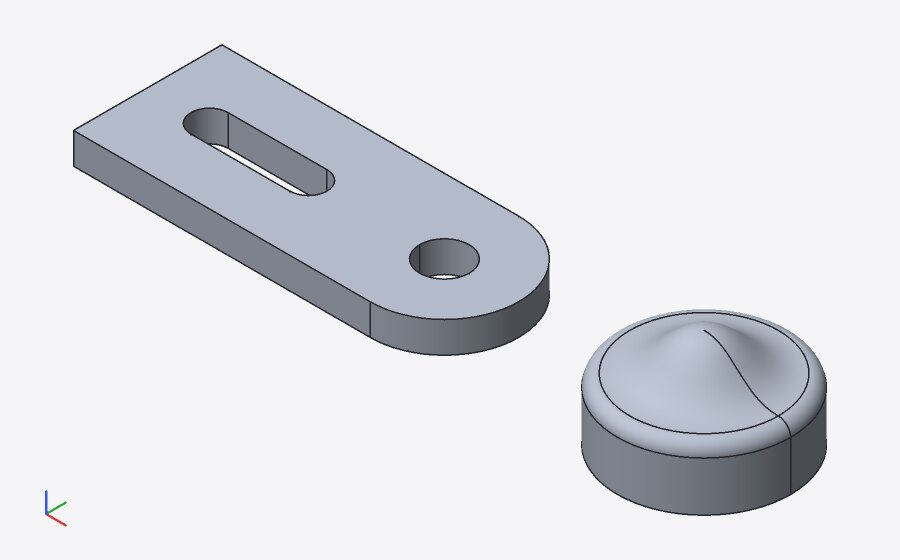
hole), Drehknopf (tangentialer Bogen, kubische Bézier)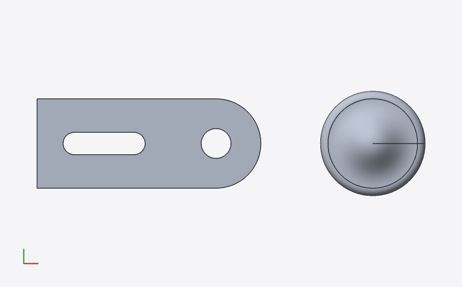
// Zweck: Zahnriemenscheibe (GT2-ähnlich) als Skizze per Schleife (Plan 17.1): jede Zahnlücke
// ist ein Bogen durch einen Punkt am Lückengrund, dazwischen ein Bogen um die Mitte auf dem
// Kopfkreis; die Nabenbohrung ist eine zweite Kontur im Uhrzeigersinn. Bordscheiben als Zylinder.
function polar(r, a) = [r * cos(a), r * sin(a)];
module scheibe(z = 20, teilung = 2, h = 7, bohrung = 5) {
ra = z * teilung / PI / 2 - 0.25; // Kopfkreisradius
t = 0.75; // Tiefe der Zahnlücke
dw = 0.6 / ra * 180 / PI; // halbe Lückenbreite als Winkel
a = 360 / z;
translate([0, 0, 1]) linear_extrude(h) sketch {
start(polar(ra, -dw));
for (i = [0 : z - 1]) {
arc(through = polar(ra - t, i * a), to = polar(ra, i * a + dw));
arc(center = [0, 0], to = polar(ra, (i + 1) * a - dw));
}
start([bohrung / 2, 0]);
arc(to = [-bohrung / 2, 0], r = bohrung / 2, cw = true);
arc(to = [bohrung / 2, 0], r = bohrung / 2, cw = true);
}
for (zb = [0, h + 1]) translate([0, 0, zb]) difference() {
cylinder(h = 1, r = ra + 1);
translate([0, 0, -1]) cylinder(h = 3, d = bohrung);
}
}
scheibe();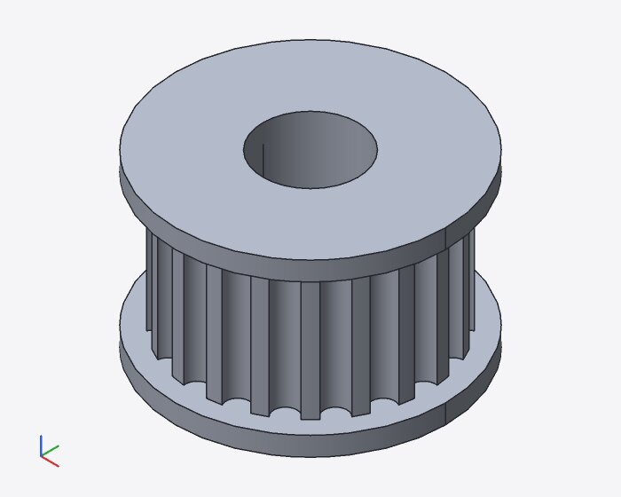
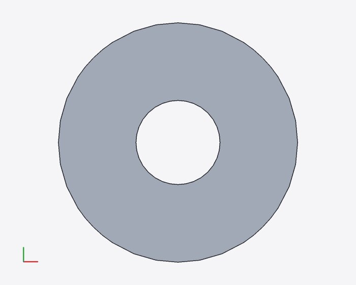
// Zweck: Offene Skizzen als `sweep`-Pfad (Plan 17.1): ein Rohrbogen aus Gerade, tangentialem
// Bogen und Gerade (glatter Pfad: ein Kurvenzug, das Profil ist ein Kreisring) in der xz-Ebene,
// und ein Rahmen aus einem Rechteckprofil entlang eines Pfads mit Ecken (Gehrung).
sweep() {
rotate([90, 0, 0]) sketch(closed = false) {
start([0, 0]);
line(to = [30, 0]);
arc(to = [45, 15]); // tangential: Radius 15
line(by = [0, 25]);
}
difference() {
circle(4);
circle(3);
}
}
translate([0, 20, 0]) sweep() {
sketch(closed = false) {
start([0, 0]);
line(to = [40, 0]);
line(to = [40, 30]);
line(to = [0, 30]);
}
square([3, 6], center = true);
}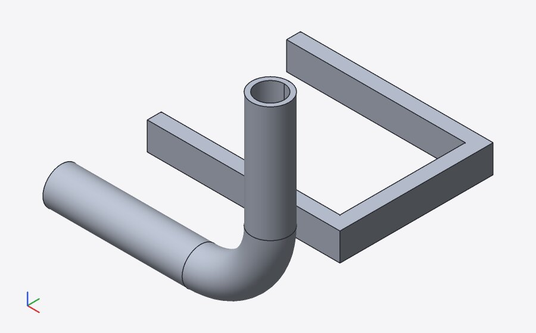
3 Module als Namensräume
module name { … } ohne Klammern; Aufrufe a.b.c(…), auch benannt (k: teile.schraube();). Der erste Teil wird lexikalisch gesucht, jeder weitere nur direkt im Körper des vorigen Moduls. Der Körper ist der Namensraum, mit den Parametern des äußeren Moduls auf ihren Standardwerten; er gehört zu keiner Instanz – Raster, benannte Instanzen und Anker des äußeren Moduls sieht das innere nicht, die Geometrie des äußeren entsteht nicht. Entscheidung Funktionen/Konstanten: erreichbar (teile.kopf(d), teile.M3) – Bibliotheken bündeln Hilfsfunktionen und Maße mit ihren Modulen ohne eigene Datei; OpenSCAD kennt keinen Punkt hinter Modulnamen (kein Konflikt), eine Variable gleichen Namens verdeckt das Modul. Kontext: cad --module teile.platte.lochplatte, UI-Pfadleiste „teile › rohr“ (S05).
// Zweck: Module als Namensräume (Plan 17.2) – eine Bibliothek `profile` mit Skizzen-Modulen
// und eine Teilebibliothek `teile` mit Konstanten, Funktionen und Untermodulen; Aufrufe von
// außen mit Punkt (`profile.stern()`, `teile.schraube(d = 3)`, mehrstufig
// `teile.platte.lochplatte()`), Funktionen und Konstanten als `teile.kopf(teile.M3)`.
module profile {
module stern(n = 5, r1 = 12, r2 = 5) sketch {
start([r1, 0]);
for (i = [1 : n]) {
line(to = [r2 * cos(360 * (i - 0.5) / n), r2 * sin(360 * (i - 0.5) / n)]);
line(to = [r1 * cos(360 * i / n), r1 * sin(360 * i / n)]);
}
}
module langloch(l = 20, b = 6) sketch {
start([0, -b / 2]);
line(to = [l, -b / 2]);
arc(to = [l, b / 2], r = b / 2);
line(to = [0, b / 2]);
arc(to = [0, -b / 2], r = b / 2);
}
}
module teile(raster = 10) {
M3 = 3.2; // Durchgangsbohrung M3
function kopf(d) = 1.8 * d; // Kopfdurchmesser
module schraube(d = 3, l = 12) {
cylinder(h = l, d = d);
translate([0, 0, l]) cylinder(h = d * 0.6, d = kopf(d));
}
module platte {
// sieht `raster` und `M3` von `teile` (Standardwerte)
module lochplatte(n = 3) {
difference() {
cube([n * raster, raster, 3]);
for (i = [0 : n - 1]) translate([raster * (i + 0.5), raster / 2, -1]) cylinder(h = 5, d = M3);
}
}
}
}
linear_extrude(3) profile.stern();
translate([25, -3, 0]) linear_extrude(4) profile.langloch(l = 25);
translate([0, 30, 0]) teile.platte.lochplatte(n = 4);
for (i = [0 : 3]) translate([10 * (i + 0.5), 35, 3]) teile.schraube(d = 3, l = 8);
translate([70, 0, 0]) cylinder(h = 2, d = teile.kopf(teile.M3));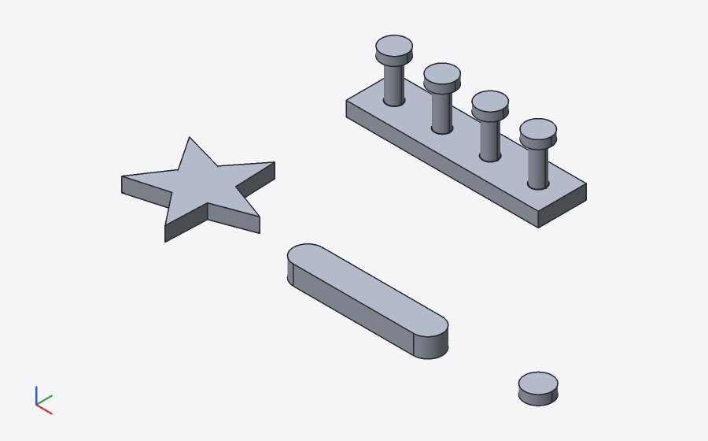
examples/spec/skizze_bibliothek.scad: 0 Fehler, 0 Warnungen Module: profile() skizze_bibliothek.scad:5–20 profile.stern(n = 5: Zahl, r1 = 12: Zahl, r2 = 5: Zahl) skizze_bibliothek.scad:6–12 profile.langloch(l = 20: Zahl, b = 6: Zahl) skizze_bibliothek.scad:13–19 teile(raster = 10: Zahl) skizze_bibliothek.scad:22–38 teile.schraube(d = 3: Zahl, l = 12: Zahl) skizze_bibliothek.scad:25–28 teile.platte() skizze_bibliothek.scad:29–37 teile.platte.lochplatte(n = 3: Zahl) skizze_bibliothek.scad:31–36 Funktionen: teile.kopf(d) = 1.8 * d skizze_bibliothek.scad:24 Farben (Filament, Farbe, Volumen, Masse PLA 1,24 g/cm³):
examples/spec/skizze_bibliothek.scad: 0 Fehler, 0 Warnungen
4 Kernel-Anbindung
cad_kernel::Segment::{Line, Arc, Nurbs}(curve2.rs): NURBS-Form, affine Abbildung (Bögen bleiben unter Ähnlichkeiten Bögen, sonst exakte rationale Ellipsenbögen), Abtastung, globale Interpolation, Verbinden zu einer B-Spline (Bézier-Zerlegung, Graderhöhung);Loop::Composite,PlacedPath,Kernel::sweep_path.- Fassade
smlib/facade/sc_sketch.cpp, eingebunden am Ende vonsc_facade.cpp(nutzt dessen interne Hilfen; allein übersetzt leer). Schleifenart 3: Geraden →SmLine, Bögen → rationale quadratische B-Splines (SM_CF_CIRCULAR_ARC), Bézier/Splines → B-Splines; Stöße exakt verschweißt. Änderungen an bestehenden Funktionen: ein Feld inLoop, je ein Zweig inparse_loops/loop_curves, die Bedingung im twist-Zweig vonsc_extrude,loft_segmentwiseinsc_loft. Neu:sc_sketch_sweep(glatter Pfad: Kurven-Sweep mit Profil-Bezugspunkt aus Patch 0003; Ecken: Gehrung). - STEP: SMLib hält extrudierte Bögen als
SmSurfOfExtrusionder exakten B-Spline; OpenCASCADE rechnete auf solchen Flächen (ohne p-Kurven) bis 2,5·10−3 falsche Volumen. Der Writer schreibt eine Extrusion eines Kreisbogens längs seiner Achse deshalb alsCYLINDRICAL_SURFACE(Orientierung angepasst) – danach stimmt OCCT auf 10−9 bzw. die Kernel-Genauigkeit.
| Modell | Flächen | CIRCLE | LINE | B-Spline-Kurven | Flächentypen | angenähert |
|---|---|---|---|---|---|---|
| skizze_profil | 16 | 14 | 21 | 3 | cylinder 5, plane 8, revolution 3 | 0 / 0 |
| skizze_zahnriemenscheibe | 47 | 86 | 44 | 0 | cylinder 43, plane 4 | 0 / 0 |
| skizze_sweep | 18 | 10 | 24 | 4 | nurbs 5, plane 12, revolution 1 | 0 / 0 |
| rechteck_halbkreis | 6 | 2 | 10 | 0 | cylinder 1, plane 5 | 0 / 0 |
| torus | 2 | 4 | 0 | 0 | revolution 2 | 0 / 0 |
OpenCASCADE (tests/step/verify.py) für die neuen Beispiele (Spalten: Körper, Flächen, V Kernel, V OCCT, dV, dA, dBox):
skizze_bibliothek ok 8 51 2788.8 2788.8 8.685e-07 4.080e-06 3.621e-17 {'cylinder': 15, 'plane': 36}
skizze_profil ok 2 16 12823.7 12823.7 1.091e-06 1.098e-06 9.184e-10 {'cylinder': 5, 'plane': 8, 'revolution': 3}
skizze_sweep ok 2 18 3707.67 3707.67 1.287e-06 7.266e-06 1.161e-09 {'bspline': 5, 'plane': 12, 'revolution': 1}
skizze_zahnriemenscheibe ok 1 47 860.299 860.299 3.972e-07 4.166e-05 1.611e-16 {'cylinder': 43, 'plane': 4}
5 Messwerte: Volumen gegen Formeln
Je Fall eine kleine Datei (reports/tmp/report14/cases/), cad measure --volume mit dem Release-Build (Zeit: ganzer CLI-Aufruf ohne Daemon). Die Geometrie ist exakt; die Abweichung ist die der Volumenintegration in SMLib.
| Fall | Kernel mm³ | Formel mm³ | rel. Abw. | ms |
|---|---|---|---|---|
| Rechteck 40 × 20 + Halbkreis r 20 (Endpunkt + Radius), h 5 | 7.141,5969 | 7.141,5927 | 5.9·10−7 | 59 |
| dasselbe mit tangentialem Bogen | 7.141,5969 | 7.141,5927 | 5.9·10−7 | 46 |
| dasselbe mit Mittelpunkt + Winkel | 7.141,5969 | 7.141,5927 | 5.9·10−7 | 50 |
| rotate_extrude eines Halbkreises: Kugel r 7 | 1.436,7565 | 1.436,7550 | 1.0·10−6 | 81 |
| rotate_extrude zweier Bögen: Torus R 20, r 4 | 6.316,5572 | 6.316,5468 | 1.6·10−6 | 114 |
| Quadrat 20 minus Kreis r 5 (Gegenlauf, nonzero) | 642,9202 | 642,9204 | 2.6·10−7 | 70 |
dasselbe mit hole { … } | 642,9202 | 642,9204 | 2.6·10−7 | 71 |
| Quadrat 4 + quadratische Bézier-Kappe (Parabel 2/3 · b · h) | 18,6666 | 18,6667 | 1.0·10−6 | 49 |
| Stern aus 12 Geraden per Schleife in einem Skizzen-Modul | 450,0000 | 450,0000 | 1.3·10−16 | 51 |
| sweep eines Kreises r 2 entlang Gerade–Bogen–Gerade (Pappus) | 637,2176 | 637,2151 | 3.9·10−6 | 104 |
| sweep eines Quadrats 2 entlang einer Ecke (Gehrung) | 140,0000 | 140,0000 | 4.1·10−16 | 68 |
| linear_extrude(twist = 90) eines Langlochs (Volumen ohne twist) | 882,7768 | 882,7433 | 3.8·10−5 | 72 |
twist: die Extrusion mit Verdrehung ist (wie bisher für alle Profile) eine kubische Loft-Näherung durch Schnitte alle 7,5°.
6 Fehler je Segmentzeile
linear_extrude(2) sketch {
start([0, 0]);
line(to = [30, 0]);
arc(to = [30, 20], r = 5);
line(to = [0, 20]);
}
linear_extrude(2) translate([40, 0]) sketch {
start([0, 0]);
line(to = [10, 10]);
line(to = [10, 0]);
line(to = [0, 10]);
close();
}
cases/fehler.scad:4:5: Fehler (Auswertung): unmöglicher Bogen: Radius 5 kleiner als die halbe Sehne 10 cases/fehler.scad:5:5: Fehler (Auswertung): Kontur nicht geschlossen: endet bei [0, 20] statt [0, 0]; `close()` fehlt cases/fehler.scad:11:5: Fehler (Auswertung): Selbstüberschneidung der Kontur mit Segment in Zeile 9 cases/fehler.scad:7:1: Fehler (Kernel): linear_extrude gescheitert: extrude did not produce a closed solid (self-intersecting or open profile?) cases/fehler.scad: 4 Fehler, 0 Warnungen
Geprüft werden: Kontur nicht geschlossen (die Skizze bleibt mit einer rot gestrichelten Schlusslinie sichtbar), Selbstüberschneidung (an der späteren Zeile, mit Verweis), unmöglicher Bogen (Radius < halbe Sehne, drei Punkte auf einer Geraden, tangential auf der Tangente, Winkel 0 oder > 360°), Kontur ohne Fläche, Segment vor start/nach close(). Eine sich schneidende Kontur meldet zusätzlich der Kernel an der Extrusion.
7 UI: Darstellung und Griffe
Steht der Cursor in einer Skizze (Segmentzeile, Schleife, hole, Aufruf eines Skizzen-Moduls), zeichnet die Ansicht sie in ihrer Ebene: Netz als Umriss mit leichter Füllung (durch den Körper sichtbar), Segmente als Linien, das Segment der Cursorzeile dick in der Akzentfarbe, Fehler rot, Kontrollpolygone und Bogenmittelpunkte gestrichelt, Start als Ring mit Richtungspfeil, Ende offener Konturen als Quadrat. Griffe: End-/Startpunkte (Literal oder Raster-Snap; line(by = …) relativ, ohne Snap), Bogenradius, Mittelpunkt, Durchgangspunkt, Bézier-Kontrollpunkte, Spline-Punkte. Prüfungen über den Zustand der UI (window.__cad) und Pixel der Ebenen.
S01 Skizze unter dem Cursor
Cursor auf einer Segmentzeile: die Skizze wird in ihrer Ebene gezeichnet – Umriss mit leichter Füllung (Netz der Engine, Modus „profile“, durch den Körper sichtbar), die Segmente als Linien, das Segment der Zeile dick in der Akzentfarbe; Startpunkt jeder Kontur als Ring mit Richtungspfeil, Bogenmittelpunkte als gestrichelte Hilfslinien.
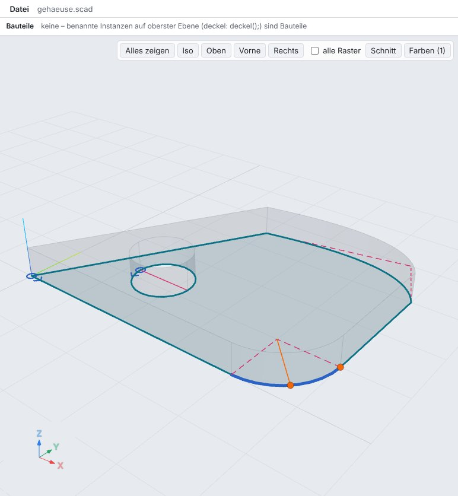
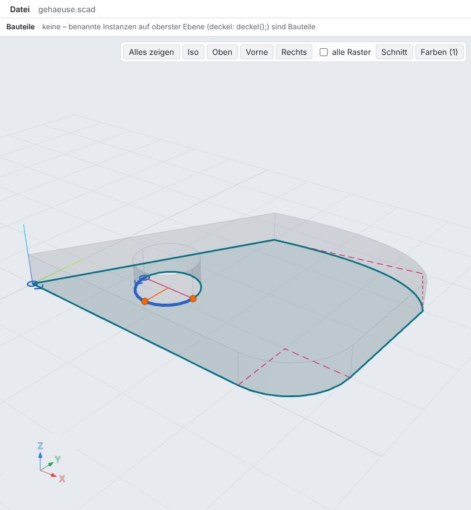
linear_extrude(5) sketch {
start([0, 0]);
line(to = [40, 0]);
arc(to = [50, 10], r = 10);
line(by = [0, 20]);
bezier(c1 = [45, 40], to = [20, 35]);
close();
hole {
start([12, 12]);
arc(to = [22, 12], r = 5);
arc(to = [12, 12], r = 5);
}
}- aktives Segment: arc (Zeile 4), Pixel 1019
- Startmarken: 2
- Zeile 10: Bogen im Loch aktiv
S02 Bézier-Segment
Quadratische Bézier-Kurve: Kontrollpolygon (Anfang – c1 – Ende) gestrichelt als Hilfslinie, Griffe am Endpunkt und am Kontrollpunkt.
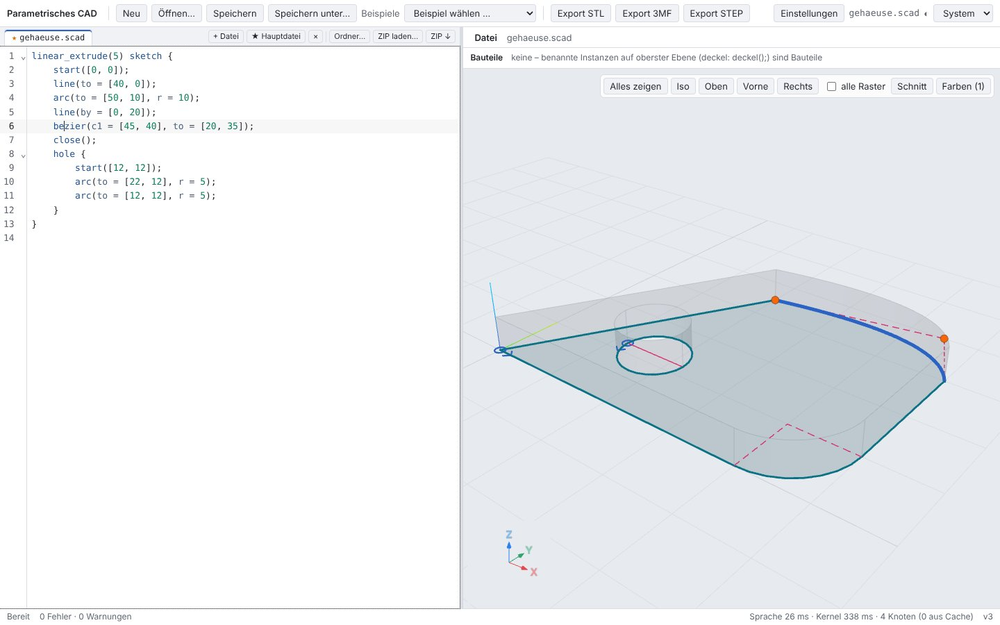
bezier(c1 = [45, 40], to = [20, 35]);
- Hilfslinien: 4
- Pixel der Hilfslinien: 735
- 2 Punktgriffe (to, c1)
S03 Endpunkt ziehen
Der Punktgriff am Ende der Geraden mit der Maus gezogen (Alt: frei, Raster 1 mm): das Literal in der Zeile ändert sich, die Skizze folgt live; der folgende Bogen beginnt am neuen Punkt.
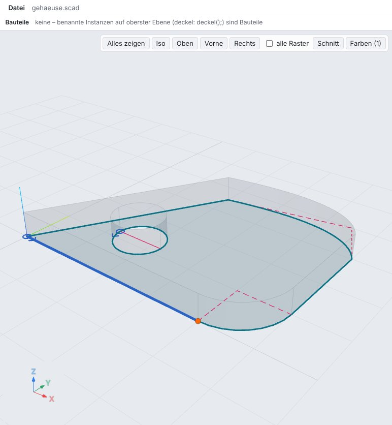
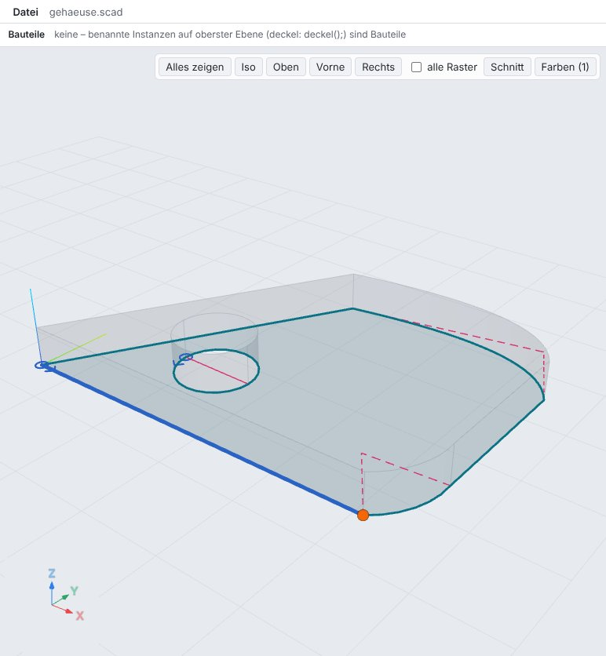
// vorher line(to = [40, 0]); // nach dem Ziehen (Alt, frei) line(to = [46, 1]);
- Literal: [40, 0] → [46, 1]
- arc-Zeile unverändert
S04 Fehler je Segmentzeile
Ein Bogen mit Radius kleiner als die halbe Sehne und eine Kontur ohne close(): beide Fehler stehen an ihrer Segmentzeile (rot, Meldung am Zeilenende); die Skizze bleibt mit der fehlenden Schlusslinie (rot gestrichelt) sichtbar.
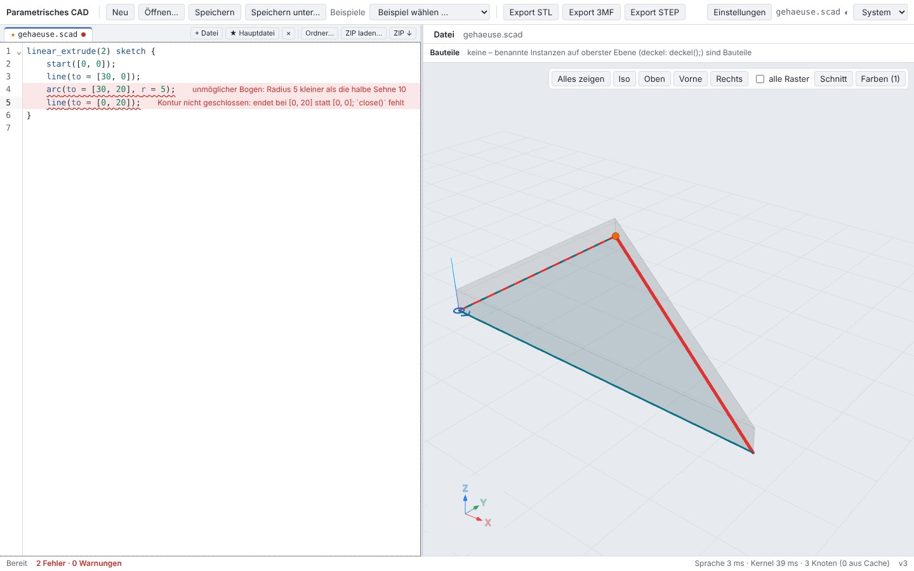
linear_extrude(2) sketch {
start([0, 0]);
line(to = [30, 0]);
arc(to = [30, 20], r = 5);
line(to = [0, 20]);
}- 4: unmöglicher Bogen: Radius 5 kleiner als die halbe Sehne 10
- 5: Kontur nicht geschlossen: endet bei [0, 20] statt [0, 0];
close()fehlt
S05 Sweep-Pfad und Namensraum
Eine offene Skizze (closed = false) ist der Pfad des sweep: ohne Füllung, Start als Ring, Ende als Quadrat; der Kreis läuft entlang Gerade – tangentialem Bogen – Gerade (ein Kurvenzug). Das Modul rohr steht im Namensraum teile: die Pfadleiste zeigt „teile › rohr“, von außen wird es als teile.rohr(r = 3) aufgerufen.
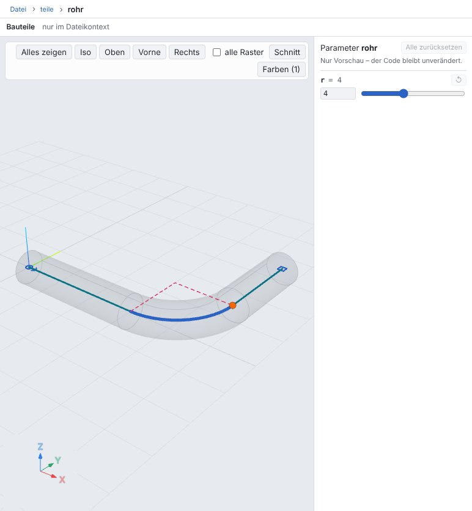
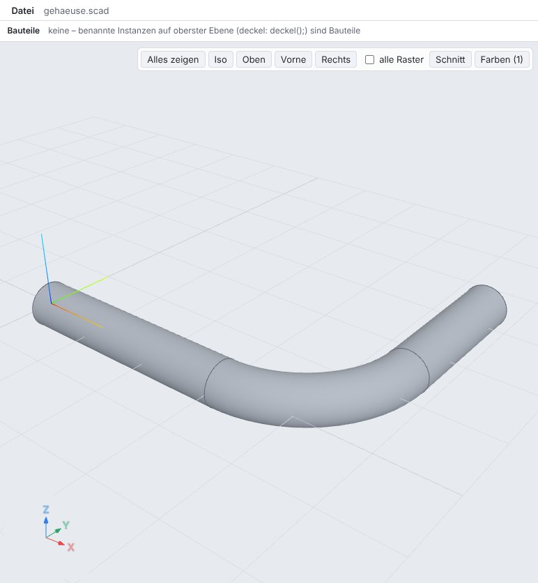
module teile {
module rohr(r = 4) {
sweep() {
sketch(closed = false) {
start([0, 0]);
line(to = [30, 0]);
arc(to = [45, 15]);
line(by = [0, 20]);
}
circle(r);
}
}
}
teile.rohr(r = 3);- Pfadleiste: teile › rohr
- offene Kontur: 1, Endmarke gezeichnet
- Aufruf in der Datei voll dargestellt
8 Testläufe
| Lauf | Ergebnis |
|---|---|
cargo test --workspace --no-fail-fast | 453 bestanden, 0 fehlgeschlagen |
cargo clippy --workspace --all-targets -- -D warnings · cargo fmt --check | sauber · sauber |
pnpm typecheck · pnpm test (Vitest) | sauber · 205 bestanden |
pnpm e2e (Playwright, Chromium) | 93 / 93 · zweiter Lauf; im ersten Lauf 92/93: B10 (Snap eines Zonenmittelpunkts, Bericht 3) scheiterte einmal, einzeln und im zweiten Lauf bestanden |
tests/openscad-compat/compare.py --eval | 33/33 |
tests/step/verify.py (OpenCASCADE) | 52/52 passed |
tests/alltag/check.sh | 19 Modelle, 0 mit Problemen, 87 s, Exporte in /tmp/alltag-ocn57h6z (gelöscht) |
node crates/kernel-smlib/js/test-node.mjs | bestanden |
Neue bzw. erweiterte Rust-Tests (29):
sketch_and_namespaces ok · bezier_and_spline_segments ok · loft_between_sketches ok · sketch_alone_is_2d_and_open_sketch_is_a_path ok · holes_by_winding_and_hole_block ok · revolve_arc_profiles_sphere_and_torus ok · sketch_modules_loops_and_twist ok · rectangle_with_half_circle ok · step_has_exact_lines_and_circles ok · sweep_along_open_sketch_path ok · arc_forms ok · named_sketch_module_and_qualified_profiles ok · namespace_visibility_and_errors ok · handles_of_segments_and_dragging ok · openscad_files_are_unaffected ok · errors_per_segment_line ok · qualified_module_calls ok · loops_variables_grids_and_modules_in_a_sketch ok · several_contours_holes_and_open_paths ok · qualified_context_module ok · segments_of_all_kinds ok · curve2::tests::arc_nurbs_lies_on_circle ok · curve2::tests::join_keeps_the_geometry ok · curve2::tests::mapped_arcs ok · curve2::tests::interpolation_hits_points_and_tangents ok · tests::module_without_parentheses_and_qualified_calls ok · tests::sketch_block_without_arguments ok · spec_models_stage1 ok · sweep_along_path ok
Vitest: web/src/logic/sketch.test.ts (Skizze unter dem Cursor, Hilfslinien, Griffe der Segmente, Modul mit Pfad); Lezer-Grammatik für sketch {, Module ohne Klammern und a.b(). CLI: sketch_and_namespaces (Volumen, Funktion im Namensraum, outline, --module teile.platte, Fehler je Zeile).
9 Grenzen
corner,fillet2d,offset,strokefehlen (Schritt 2); keine Transformationen innerhalb einer Skizze (ein in der Skizze aufgerufenes Modul zeichnet in Skizzenkoordinaten).- Selbstüberschneidung wird auf abgetasteten Polylinien geprüft (Toleranz relativ zur Skizzengröße); Überschneidungen zwischen Konturen sind erlaubt (nonzero); die Verschachtelung von Löchern und Inseln setzt sich nicht schneidende Konturen voraus.
- Sweep entlang einer Skizze mit Ecken nur als Gehrung und mit um den Ursprung zentriertem Profil; geschlossene Pfade nicht.
- Loft mit verschiedener Segmentzahl verbindet jeden Abschnitt zu einer Kurve (C0 an den Stößen): die Flächen folgen nicht mehr den Segmenten.
- STEP: nur Extrusionen von Kreisbögen werden als Zylinder geschrieben; Rotationsflächen von Bögen bleiben
SURFACE_OF_REVOLUTIONder exakten Kurve (Kugel/Torus nicht erkannt; OCCT liest sie richtig). cad render --line Neiner Segmentzeile hebt die ganze Skizze hervor; die Hervorhebung des einzelnen Segments gibt es nur in der UI.- Namensräume: Konstanten werden je Zugriff in einem neuen Namensraum ausgewertet (keine Zwischenspeicherung);
--module nameohne Pfad nimmt das erste Modul des Namens.